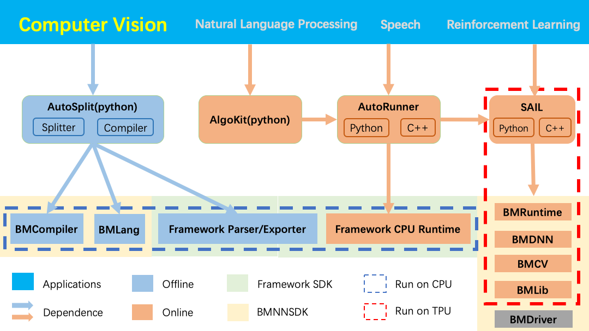

图解 Sophon Inference¶
Sophon Inference 是基于比特大陆原创深度学习开发工具包 BMNNSDK 开发的一套开源工具， 旨在帮助您快速地将您的模型部署于 Sophon TPU 上。(https://sophon.ai)
上图展示了 Sophon Inference 的整体结构以及它与 BMNNSDK 的依赖关系。 下面我们对上述图文中提及的概念进行解释。
BMNNSDK¶
BMNNSDK 是比特大陆原创的深度学习开发工具包，主要由BMDriver、BMCompiler、BMRuntime、BMDNN、BMCV、BMDecoder 等模块组成。 其中：
BMDriver ：是 Sophon TPU 的驱动程序，采用 “insmod” 的方式安装到您的操作系统内核中。
BMCompiler ：是一组模型编译工具，它能将您训练好的深度学习模型编译成可被 Sophon TPU 加载并执行的指令， 并将这些指令保存到一个后缀名为 “bmodel” 的文件中。
BMRuntime ：提供的接口可以将 “bmodel” 文件加载到 Sophon TPU 上并驱动 TPU 芯片实现推理。
BMDNN ：可以对 DNN 算法进行加速。
BMCV ：可以驱动 TPU 进行图像处理。
BMDecoder ：可以驱动 Sophon 深度学习加速卡上的 VPU 进行视频、图像解码。
如果您还有关于BMNNSDK的任何疑问，请参考《NNToolChain用户手册》、《BMCV用户手册》。
模型部署¶
模型部署包含模型离线编译与在线推理两个步骤。
a).离线编译
使用 BMCompiler 将深度学习模型编译为 TPU 指令并保存在 bmodel 文件中。
BMCompiler 是一组模型编译工具，分别对应了不同的深度学习框架， 目前的BMNNSDK中实现了4个编译工具用来支持4种深度学习框架。 它们分别是 bmnetc(Caffe)、bmnett(Tensorflow)、bmnetp(Pytorch)、bmnetm(Mxnet)。
模型编译不须插卡，不依赖 BMNNSDK 中除 BMCompiler 外的其它模块。
b).在线推理
使用 BMRuntime 中提供的接口加载 bmodel 文件至 TPU， 并驱动 TPU 执行 bmodel 中的指令，完成推理。
若要实现在线推理过程，您至少需要安装 Sophon TPU、BMDriver、BMruntime。
Sophon Inference¶
Sophon Inference 包括上图中的 SAIL、AutoDeploy、Python Samples(Algokit)、C++ Samples Using SAIL/BMNNSDK。 我们提供了python/c++的接口与示例程序，您可以根据您的需要选择合适的调用方式。
针对使用python的用户，SophonInference 提供了SAIL、AutoDeploy、Algokit三个模块：
SAIL ：对 BMNNSDK 中的 BMRuntime、BMCV进行了封装，可用于 a).驱动 TPU 对经过编译后的深度学习模型进行推理; b).使用Sophon TPU做图像、视频处理; 模型转化以及图像、视频处理的详细介绍请参考《NNToolChain用户文档》与《BMCV用户文档》。
AutoSplit ：一键式的模型切分与编译工具，主要面向无法完整部署到Sophon TPU上的模型，可自动化地： a).将原始模型切分为若干子模型; b).对其中可以部署到Sophon TPU上的子模型进行编译; 目前支持tensorflow/mxnet。
AutoRunner ：通常与 AutoSplit 一起使用，也可以单独使用。 提供的接口可以实现切分后或编译后的子模型序列的推理。 内部分别调用的特定深度学习框架的推理接口与 SAIL，分别实现 CPU 与 TPU 上的推理。 目前支持 tensorflow/mxnet。
Algokit ：对SAIL、AutoDeploy的功能进行了封装; 以python代码实现了多个样例程序; 作为应用代码编写的模板供用户参考。
针对使用C++的用户，SophonInference 提供了 SAIL 以及:
C++ Samples Using BMNNSDK ：调用 BMNNSDK 中的原生接口进行视频解码与模型推理的示例程序。
C++ Samples Using SAIL ：调用 SAIL 提供的接口进行视频解码与模型推理的示例程序。